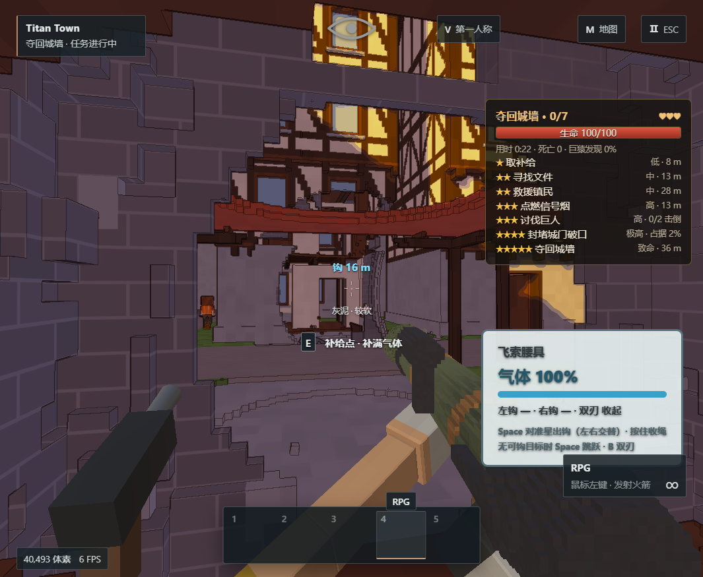
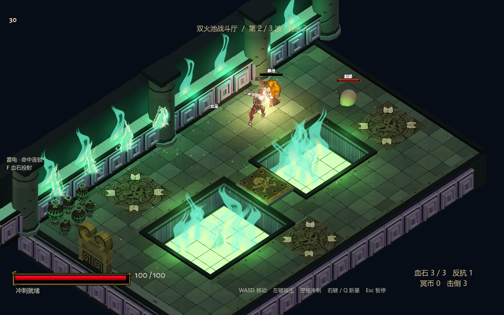
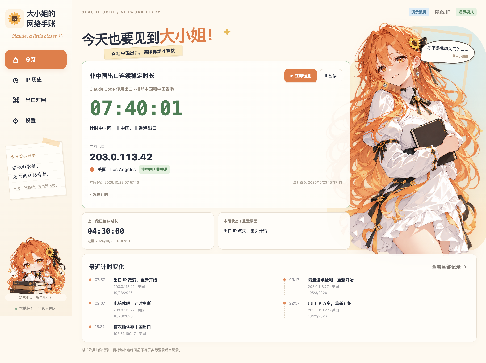
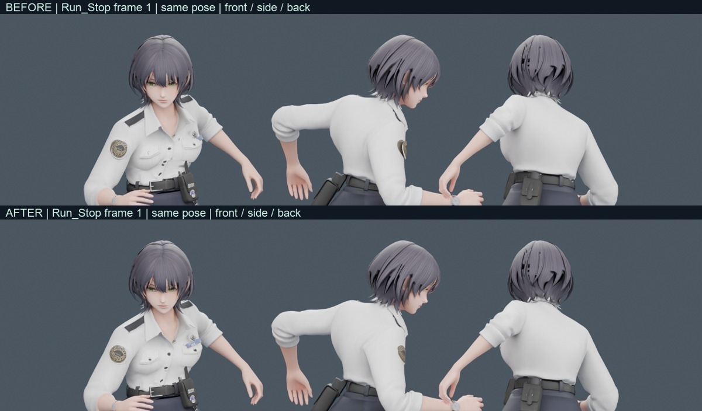

项目控制台截图
项目控制台截图
01 / SELECTED WORKS
让想法，有个形状.
游戏、动态视觉、AI 与工具。这里是我做过的一些尝试。
共 7 件作品
项目控制台截图
 实际渲染截图
实际渲染截图
AI Wallpaper Workshop
包含蓝天湖景列车、星空列车两个运行案例，以及分层制作、质量检查与离线导出的两份 Skill。提供 TA 拆解、Shader 实现和本地运行文档。

实际游戏截图
学习 Demo 实际截图 · 非原作画面Hades 学习 Demo · 冥界试炼
基于 Godot 的三房间动作游戏学习 Demo，包含战斗、奖励与祝福选择、Boss 波次及胜负结算。提供 Windows 版本和中文游戏界面；项目非官方，仅限非商业学习。

实际应用截图 · 演示数据
角色肩袖修正前后对比Video to Game Animation
面向 Agent 的视频参考转游戏角色动画 Skill，包含姿态估计、动作重定向、步态协调、蒙皮诊断和 Blender 复验。提供脚本、修订对比与测量数据，需结合具体角色配置和验证。
暂时没有找到
换个关键词，或试试其他分类。
更多正在生长的项目查看全部 GitHub 仓库 ↗